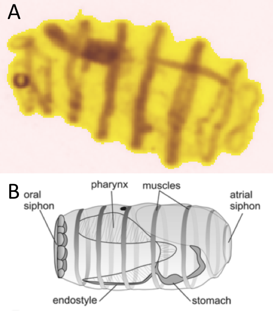

5 Tunicata
Les tuniciers constituent un sous-phylum des Chordés divisés en trois classes. Ces organismes tirent leur noms de la tunique, produite par l’épiderme, les recouvrant. Ils possèdent un pharynx ouvert vers l’extérieur mais les organismes adultes sont dépourvus d’une notochorde. En plus de la tunique caractéristique, ces organismes possèdent un stade larvaire particulier qui possède une notochorde (Ruppert, Fox, et Barnes 2004).
Les trois classes de tuniciers sont les Appendicularia, les Ascidiaceaet les Thaliacea (Horton et al. 2022).
5.1 Ascidiacea
Aucun organisme adulte de cette classe n’est retrouvé dans l’échantillonnage étant donné que ce sont des organismes benthiques filtreurs fixés au substrat. Par contre la larve de ces organismes est pélagique, composée d’une tête et d’une queue. C’est cette queue qui contient la notochorde, disparaissant chez l’adulte fixé (Ruppert, Fox, et Barnes 2004).
Ces larves pourraient apparaître occasionnellement dans nos vignettes, mais elles restent toujours rares.
5.2 Appendicularia
Les appendiculaires sont des tuniciers pélagiques. Ils ont la particularité, par rapport aux autres tuniciers de conserver la queue à l’état adulte, queue qui leur sert d’organe locomoteur. Cette classe d’organisme est parfois également appelée Larvaceae. Ce sont des organismes souvent échantillonnés parmi le plancton marin (Ruppert, Fox, et Barnes 2004). Au vue de leur morphologie néoténique, ils sont facilement identifiables. Dans cette étude la taxonomie sera affinée pour essayer de distinguer les différentes familles d’appendiculaires : Fritillariidae, Kowalevskiidae et Oikopleuridae (Horton et al. 2022).
5.2.1 Frittillariidae
Cette famille ( Figure 5.1 ) est constituée de deux sous-familles différentes, les Appendiculariinae (un seul genre) et les Fritillariinae (trois genres).
La Figure 5.2 propose des vignettes supplémentaires.
plot_vignettes(vigns, group = "fritillariidae")5.2.2 Oikopleuridae
Cette famille ( Figure 5.3 ) d’appendiculaire est constituée de deux sous-familles, les Bathochrodaeinae (deux genres) et les Oikopleurinae (dix genres). Ils ont un corps ovoïde avec deux ouvertures branchiales reliant la cavité pharyngée (Aravena et Palma 2002).
La Figure 5.4 propose des vignettes supplémentaires.
plot_vignettes(vigns, group = "oikopleuridae")5.2.3 Kowalevskiidae
Ces organismes possèdent un tronc court avec une dépression de la partie antérieure et sans endostyle (Aravena et Palma 2002). Aucun de ces organismes ne se retrouvent dans les vignettes du set d’apprentissage.
La littérature portant sur les caractères morphologiques des appendiculaires est peu fournie, il est donc difficile d’établir une liste précise des critères morphologiques distinctifs de ces organismes. De plus les appendiculaires sont très fragiles et il arrive souvent de trouver les queues séparées du reste de l’organisme, c’est pour cela qu’une classe du set d’apprentissage est consacrée aux queues détachées d’appendiculaires.
5.3 Thaliacea
Les Thaliacées sont également des tuniciers pélagiques à l’état adulte, vivant séparés ou en colonies. Leur anatomie rappelle fortement celle des Ascidiaceae, en forme de sac filtreur. Ces organismes ont un cycle de vie complexe, alternant larve solitaire et phase coloniale. Cette classe est constituée de trois ordres différents qui seront étudiés ci-dessous (Ruppert, Fox, et Barnes 2004).
5.3.1 Doliolida
Les dolioles ( Figure 5.5 ) ne possèdent pas de cavités péribranchiales et possèdent quatre fentes branchiales. Les blastozoïdes (individus) sont divisés en gonozoïdes (fonction reproductrice), phorozoïdes (fonction locomoteur) et tropozoïdes (fonction nutritive).

La Figure 5.6 propose des vignettes supplémentaires.
plot_vignettes(vigns, group = "doliolida")5.3.2 Pyrosomatida
Les pyrosomes font partie de l’ordre des Pyrosomatida. Les pyrosomes peuvent former de grandes colonies tubulaires de plusieurs mètres et sont connus pour leur bioluminescence. Ils sont constitués de milliers de blastozoïdes dont la tunique est fusionnée et le siphon buccal s’ouvre au centre du tube (Caicci et al. 2013). Aucun pyrosome ne se retrouve dans nos vignettes.
5.3.3 Salpida
Tout comme les dolioles, les salpes ( Figure 5.7 ) ne possèdent pas de cavité péribranchiale. Les individus solitaires peuvent atteindre 8\ cm de longueur et les colonies plusieurs dizaines de mètres (Caicci et al. 2013).

La Figure 5.8 propose des vignettes supplémentaires.
plot_vignettes(vigns, group = "salpida")